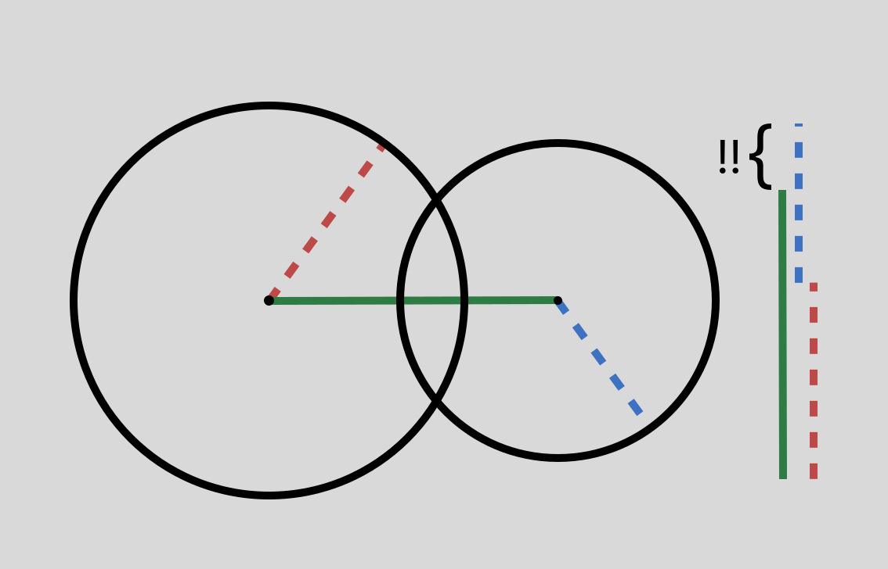
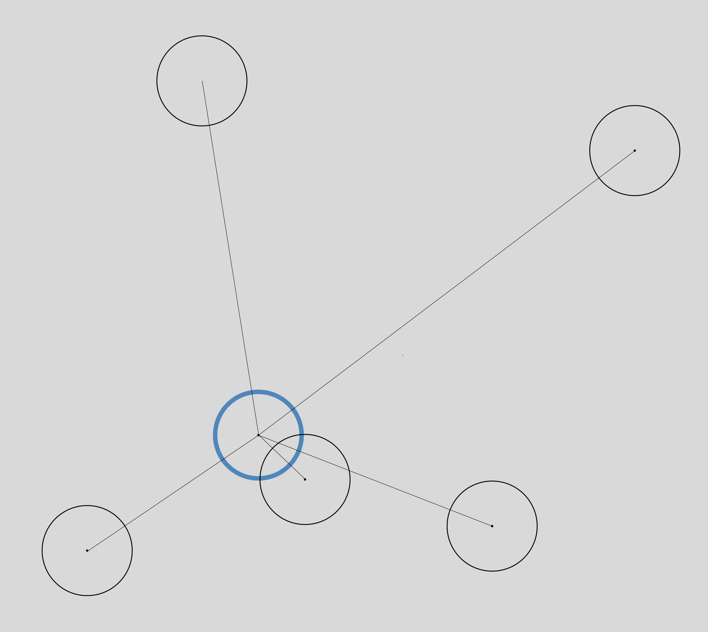

The Physics Engine
Everything in the system, barring the world's walls, is represented as a circle. Circles are the simplest geometric shapes to implement physics for. All that a circle can do is move around, rotate, and bump into things. Checking for bumping-into-things-ness for simulated objects is a surprisingly annoying operation.
The problem is to be responsible for bunch of circles moving around in a large perimeter, and to make sure that none of them overlap, as it isn't very physics-y for physical objects to overlap. We can start by defining what a collision is. Thankfully since we're only working with circles and no other shape here, this is rather simple. Two circles are in overlap if the distance between their centres is less than the sum of their radii (radius-es). You can "resolve" this overlap by subtracting half of the vector of overlap from each of their positions (we assume that all the circles are massless and inelastic), and now they would be just in contact at a single point (i.e. sliding against each other). The more quickly you keep checking and resolving, the less glitchy it would look, since there isn't much room for very large overlaps to occur between frequent checks.
Now, to resolve all the overlaps for a given circle at a given point in time, naturally you have to check for overlap against every other circle in the world.
This means, if we have n circles in the world, and we have to check each circle against every other circle, we end up with roughly n^2 overlap checks. Well obviously, this is a huge issue, since even for a reasonable number of circles, the number of checks we have to perform at every step is gigantic.
But if you think about it, is it really even possible for a circle to collide with another all the way across the world? Why even waste time checking? If we're clever with how we store our circles, we really only need to check in a small neighbourhood around each circle. LOTS of Algorithms research has gone into this for more serious physics engines, but the simplest algorithm is: Divide your world up into a grid, and for a given circle, check only for other circles in its own gridsquare or the 8 surrounding it. This means, especially if the circles are more uniformly distributed in the world, the number of checks goes down to much, much lower than n^2.

After making this switch, I was able to simulate upwards of 50 thousand circles moving around at 60 timesteps a second, at a decent physics fidelity (simply put, how quickly we update positions and squash overlaps). Of course, this number was bound to go down once food and obstacles went into place, and tank once the actual sense-action implementation of neural networks was added.